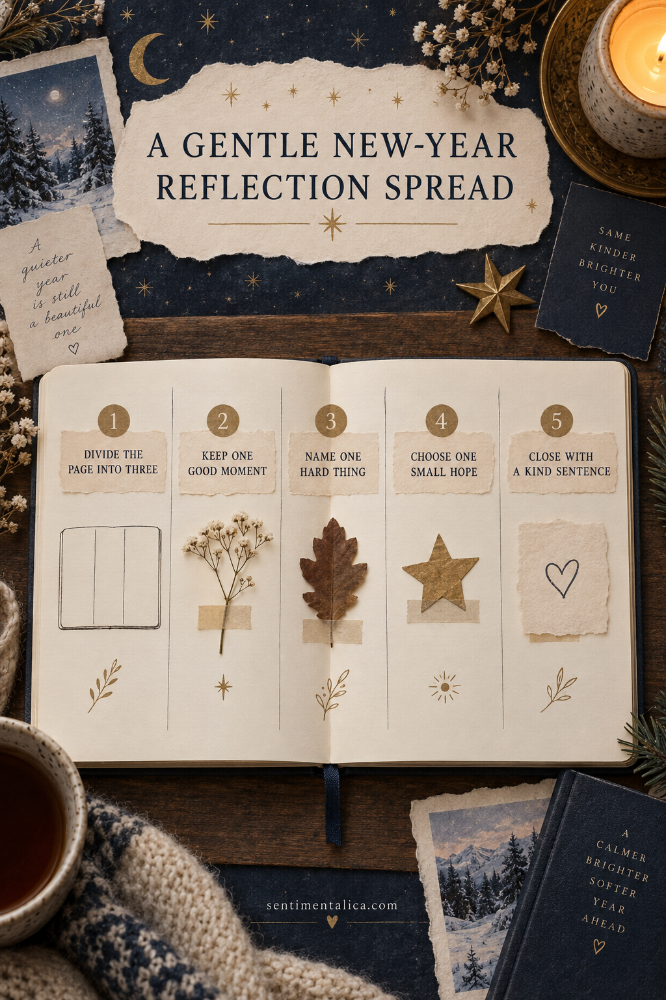

A New Year reflection page does not need resolutions or a polished summary of the year. This gentle spread makes room for what changed, what helped, and what you want to carry forward.

Divide the spread into three loose areas
Use pencil lines, folded paper, or three scraps to make space for keep, release, and carry forward. The areas do not need to be equal or perfectly straight.
Keep one good moment
Choose a small event that still feels warm: a walk, a meal, a finished page, or a kind message. Add one photograph or paper trace if you have it.
Name one hard thing plainly
Write one sentence without turning it into a lesson. You can cover it with a flap if it is private. Honest reflection is more useful than forced gratitude.
Choose one small hope
Pick something gentle and possible, such as noticing winter light, calling one friend, or making one page a week. Avoid a long list of performance goals.
Close with a kind sentence
Write to yourself as you would to someone you love. The final line should make the page easier to revisit, not create another demand.
Want a low-pressure page to practise with? Open the 100 free floral pictures, choose one image that matches your palette, and try the method before using a favorite original.
Let the page stay simple
Use a glue stick or a thin layer of paper adhesive, keep wet glue away from photographs, and allow folded pieces to dry before closing the journal. Flat paper traces are safer for the binding than thick natural objects or heavy charms.
When the page is finished, add the full date and one sentence only you could have written. That final detail turns a pretty arrangement into a memory.
Prepare a small, calming workspace
Clear only enough room for the open journal and one shallow tray. Put scissors, adhesive, pencil, and the chosen papers within reach, then move the larger supply boxes away. A limited workspace reduces repeated decisions and makes it easier to notice when the page is already complete.
If you feel rushed, do the construction first and the writing later. Keep the photograph or note in the unfinished pocket so nothing is lost. The page can wait until you have the quiet attention its story deserves. Close the supplies when you stop so returning feels easy.
Use evidence instead of judging the year
Replace broad labels such as good, bad, successful, or wasted with one specific example. A changed route to work, a person you called more often, a meal you learned, or a habit you quietly stopped will tell you more than a score ever could.
Leave one section unfinished on purpose. Add a small envelope or folded flap labeled “still becoming” and place one unresolved thought inside it. The spread can acknowledge uncertainty without demanding an answer. Date the page on the day you make it rather than backdating it to New Year’s Day; reflection is still valid when it arrives later.